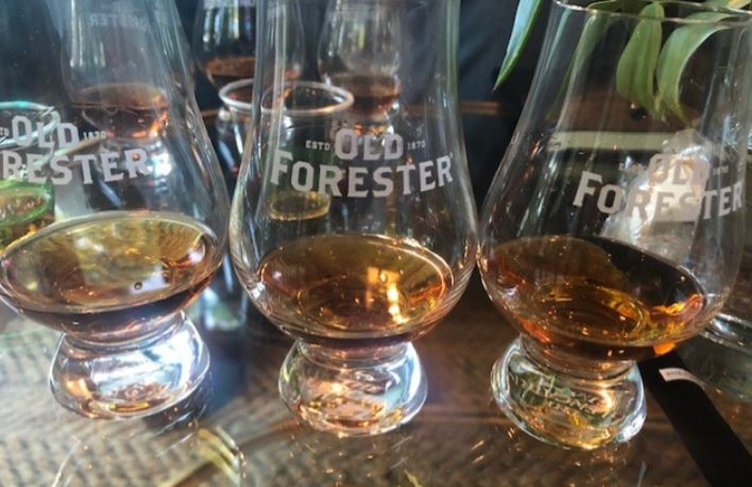
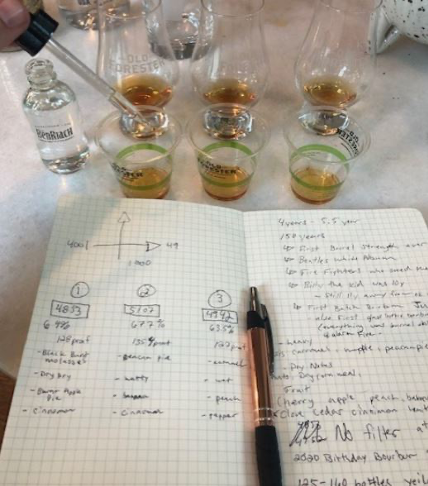
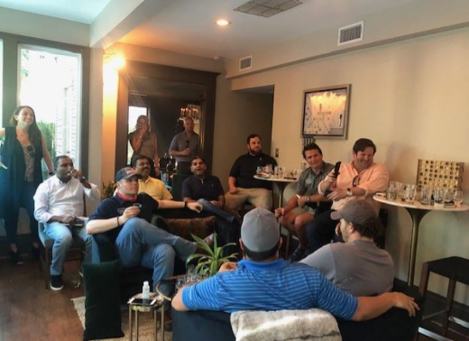

Old Forester Barrel Proof Selection
On a very warm Thursday afternoon, I was joined by Brian, Dane Covey, Jeff Ridley, Daniel Palos, Dustin Stone, Mark Kumar, a few of his pals and Scott Berlin at the gorgeous Gaston Bed & Breakfast. For those that don't know Scott, he is a DBC member and proprietor of the Gaston. It's a beautiful five room hotel and event space right in the heart of the city. It's absolutely gorgeous and is the perfect place for an event or a staycation...check it out!

Setting aside, we had some work to do. The goal of the evening was to select an Old Forester Single Barrel Bourbon. But unlike our last trip to Whiskey Row; there would be no bottle proofing. This whiskey was going to be raw, uncut, and straight from the barrel. Alongside Scott, we were hosted by Tristan Westphal of Brown Forman, and virtually by Old Forester's own, Jim Lake (honorary DBC member) and our friend Tyler Mirt, the host of the single barrel program. After a few warm up drinks of Dust on the Barrel, the folks in Louisville were dialed in via WebEx. The evening was on...
For a few members on the selection team, this was their first time. This created a real excited buzz in the room: It was Christmas Eve and Bourbon Santa Claus was nearly at the Gaston. Since we had a few first timers, Tyler started us off with a brief history on the brand but then provided a ton of cool insight into the science and process behind Old Forester bourbon. The coolest thing we learned was the heat cycling process. This process is how Old Forester gets a four to six year old bourbon to taste like something double it's age; it's how they get great young whiskey to taste so complex. After laying down some serious knowledge on us, Tyler then go to work on doing what he does best: breaking down the sensory experience and all of the elements involved when you taste bourbon. Tyler's walk through of the sensory experience and his methodology is so good, that I won't try to rehash it here: it's got be seen and heard in order to do it proper justice. To start, he primed our palettes with some signature Old Forester 86 proof whiskey and from there, we were off to the races.
In front of us were three samples of totally uncut Old Forester. Each of them had gut busting proofs over 125. This was some serious stuff. By request, Tyler kept all fo the proofs and ages a secret until we had chosen a winner. This way we could let the best whiskey do the talking and not just pick a paper tiger.
The first whiskey had a really nice nose; heavy on the banana notes. But the alcohol vapor was pretty intense. Tasting this at first, it had a lot of delicious honey notes as well as a really unique taste of cedar. The viscosity was absolutely outstanding. Tyler is a big proponent of going back and revisiting each whiskey as the second time around, your palette is more acclimated to high alcohol. So the second taste produced a very pleasant orange zest and maple syrup. Adding a few drops of water yielded mixed results: less burn and outstanding chocolate notes, but more of a grainy finish.
The second whiskey had the best nose of the lot. It was nutty, chocolatey and overall, just very savory. It was a lovely nose. The taste was just as good: a ton of complexity upfront and then robust oak and baking spices going down. My second taste provided more of the same: really rustic, really complex with one amazing texture. My immediate comparison was a Elijah Craig Barrel Proof. It was a testament to the Old Forester process because this whiskey tasted like an ECBP that is more double the age on the Forester.
The third whiskey had a unique nose, not the best, just a little off the wall: spearmint and cedar. It drank like a brick though: hard to discern specific flavors other than a full-bodied bourbon. My second pass a little better: buttered toast with that unique mint snap at the end. I really liked this one with water because it brought out a lot of the subtleties.
After the group tasted through everything, the traditional riffing and politicking began. Everyone trying to argue their case for the best in the lot. The conversation quickly evolved into a philosophical one: Do we pick a great tasting Old Forester? Or, do we pick something off the wall that we've never had before? It was clear that whiskies #1 and #3 were noble expressions of Old Forester. However, there's always a dark horse and that one was whiskey #2. As Palos put it: Whiskey #2 was a wild stallion. And he wasn't wrong: it was an absolutely delicious wild card.
If you think back to the story of Dust on the Barrel, this is the very same dilemma that we ran into: Play it down the middle and pick a great tasting whiskey that would have broad appeal? Or do we pick something bold and adventurous? Last time, we took the former option and picked a great tasting product that became Dust on the Barrel.
With this moral dilemma on our minds, we put it to a vote. On the first pass, Whiskey #1 was quickly voted out, leaving #2 and #3, the wild pony or the safe play. On a head to head, final vote, it was a clear decision. The group wanted to run free like the stallion that is Whiskey #2. The Wild Pony was just too good to let go; we had to tame this beautiful beast. Tyler agreed: Whiskey #2 was the oldest and highest proof of the lot, a great choice indeed.
This enigmatic whiskey we selected was bottled on May 7, 2015 and bottled at a whopping 135.4 proof. It was rested near a window in Warehouse K.
Our selection is going to be one fantastic whiskey that is worth chasing. It's delicious, it's complex and it's unlike anything we've ever selected. If it weren't for the bottle, you'd never believe it was Old Forester. Can't wait till we get our hands on this one later this year.
As always, a huge thank you to Lakewood Medallion. DBC picks are available exclusively through Lakewood Medallion and this partnership continues to blossom. To our hosts at Old Forester, WOWWWW. We are so excited that the encore to Dust on the Barrel is going to be so unique and delicious. It's going to be one delicious barrel and it will make the perfect accent to end of the year festivities. And of course, thank you to Scott and the folks at the Gaston for proving an amazing setting for the evening.
One last thing that stuck with me. Before signing off, Tyler had a final toast for us. While I didn't get a chance to write it down or record it, I'll summarize. When the coronavirus is behind us, there's going to be a serious reason to celebrate and to enjoy how lucky we are. When that day comes, reach up and grab that special, old bottle you've been holding onto. When this is over, that's going to be reason enough to open that bottle and enjoy with family and friends. I really liked the timeliness of that toast and what it means. Coming out on the other side of something so frightening like an unseen pathogen, beating that awful virus and moving into a safer world: that's something worth celebrating and a day worth remembering.